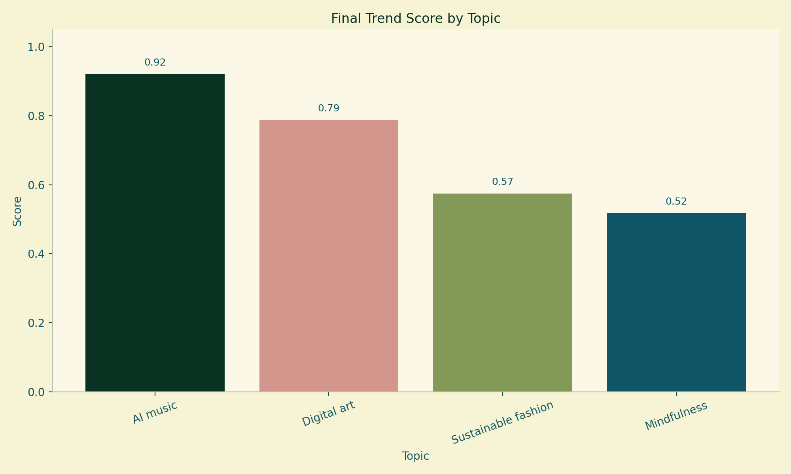
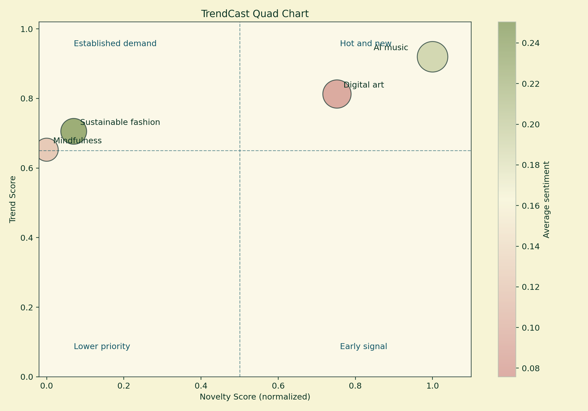

TrendCast: Multimodal Forecasting of Emerging Cultural Trends
Ishani | FSE 570 Capstone Project | Spring 2026
Keywords: trend forecasting, multimodal analytics, BERTopic, scenario planning, cultural intelligence
Abstract
TrendCast is a modular trend-intelligence system built to help decision-makers identify which cultural topics are growing, which are merely popular, and which may become strategically important across different future scenarios. The system integrates heterogeneous text and media signals from NewsAPI, Reddit, Spotify, and an optional X/Twitter branch into a common analytics pipeline, then applies sentiment analysis, topic modeling, network analysis, forecasting, multimodal fusion, explainability, and scenario planning. A reproducible demo run was used as the primary evaluation artifact for this report because it guarantees stable outputs independent of rate limits or missing credentials. In the validated benchmark run, AI music ranked first both in the base trend table and in the multimodal fusion layer, while Digital art emerged as the strongest long-horizon growth candidate. Sustainable fashion performed best as a climate-sensitive medium-term opportunity, and Mindfulness remained resilient under a mental-health-priority future. The project demonstrates that a search-based dashboard and a modular analytics stack can support interpretable, data-driven scanning of emerging cultural signals.
1. Introduction
Organizations increasingly need to monitor early cultural signals across multiple online environments rather than relying on a single platform. A topic that appears weak in formal news may already be accelerating inside communities, entertainment platforms, or creator ecosystems. TrendCast was built to address this problem by turning scattered cross-platform mentions into a ranked decision aid that can be searched, explained, and visualized in one workflow. The project evolved from an exploratory notebook into a modular Python application with a Streamlit dashboard, reproducible demo mode, live API mode, topic management through configuration files, and exportable artifacts for strategy reporting.
The central capstone question is: how can a lightweight analytics system combine heterogeneous public signals into an interpretable forecast of which topics deserve attention now and which topics are more likely to matter under specific future conditions? The final system is designed not only to score topics, but also to explain the drivers behind those scores and translate them into strategy-oriented recommendations.
2. Data Sources and Data Preparation
TrendCast satisfies the rubric requirement for heterogeneous data by combining three different public data types in the reproducible benchmark: news articles from NewsAPI, community posts from Reddit, and music/search signals from Spotify [1]-[3]. An optional X/Twitter branch exists in the codebase, but it depends on credentials or a local CSV export and was therefore treated as optional rather than mandatory in the benchmark. These sources are structurally different: NewsAPI contributes article title and description fields, Reddit contributes user-driven community discourse, and Spotify contributes media-discovery signals that reflect creator and listener behavior.
Table 1. Heterogeneous data sources used by TrendCast.
Source | Data structure | Decision value | Collection approach |
NewsAPI | Article metadata and text snippets | Traditional/public media attention | Keyword search on /everything endpoint |
Subreddit posts and search results | Grassroots discussion and niche communities | Topic terms plus subreddit targeting | |
Spotify | Track and search metadata | Music/creator ecosystem signals | Query-based search with optional audio metadata |
X/Twitter (optional) | Post export or API results | Real-time social amplification | Credential- or CSV-dependent branch |
All sources are normalized into a common schema containing at minimum topic, source, text, engagement, and timestamp fields. Text cleaning converts strings to lowercase, removes URLs and nonalphabetic characters, and collapses repeated whitespace. Sentiment polarity is computed with TextBlob, which returns a continuous polarity score in the range [-1, 1] [4]. Because engagement scales differ dramatically by source, TrendCast normalizes engagement within each source before aggregation. This design decision prevents Reddit vote counts or Spotify popularity proxies from overwhelming the smaller-magnitude signals extracted from article data. The system does not use private personal data; it operates on public-facing records and stores only the fields required for aggregate analysis.
To confirm that the pipeline is not limited to synthetic data, the current local live outputs also show successful ingestion from NewsAPI (57 records), Spotify (30 records), Reddit (18 records), while X/Twitter remained optional and credential-dependent. This live evidence supports the claim that the project can ingest real heterogeneous public data even though the report's benchmark figures are taken from a reproducible demo run.
3. Methodology and Application
The TrendCast pipeline applies several advanced methods in sequence. First, cleaned records are aggregated into source-level topic summaries. For each source-topic pair, the pipeline computes mention count, normalized engagement, and average sentiment, then combines them into a trend score using a 0.4/0.4/0.2 weighting scheme. Second, the project computes a novelty score using a KL-divergence-style comparison between observed topic engagement distribution and a uniform baseline. The purpose of this step is not to measure whether a topic is globally rare, but whether it behaves as an unusually concentrated signal relative to the other topics in the same run.
Third, topic modeling is performed with BERTopic when the installed environment supports it, and otherwise the system falls back to a local BERTopic-style clustering pipeline [5]. In the current project environment, exact BERTopic is available and was used successfully. Fourth, a topic similarity network is built from TF-IDF-based text representations, and centrality-derived indicators are included in the later fusion step. Fifth, the system builds near-term forecasts from daily/weekly mention series using an ensemble of Bayesian ridge regression, Holt exponential smoothing, and a simple momentum model [6]-[7]. The forecast ensemble weights are not arbitrary: they are estimated from rolling one-step backtest errors, which provides a practical validation mechanism even for short time series.
Sixth, TrendCast performs multimodal fusion. It combines normalized text-trend, novelty, visual-energy, visual-innovation, audio-energy, audio-novelty, network-centrality, forecast-growth, and deep-fusion features into a single multimodal score. The deep-fusion branch uses a scikit-learn MLP regressor as an exploratory neural-style model over mixed numerical and categorical features [8]. Seventh, the strategy layer maps each topic onto a Cultural Genome with innovation, tradition, wellness, community, and expression axes, then simulates how topics would perform under five external scenarios such as Creator Economy Boom and Mental Health Priority Shift. Finally, an explainability module reports which factors most strongly supported each topic ranking.
4. Validation Approach
Validation was handled in a way that matches the realities of a public-API capstone project. The reproducible demo mode was used as the primary benchmark artifact because it guarantees stable reruns and avoids live-mode failures caused by rate limits, token availability, or external service variability. Within the forecasting module, the ensemble uses rolling one-step backtests to determine which forecaster should receive more weight for each topic. At the system level, validation also included source-status checks, exact BERTopic availability checks, dashboard inspection, and end-to-end pipeline runs that confirmed all expected artifacts were produced. Live mode remains important for operational use, but the report relies on demo-mode outputs whenever a claim needs to be fully reproducible.
The local harvest log also records successful live iterations on 2026-04-28T23:45:41.153805+00:00, with BERTopic enabled and Digital art as the top topic in that run.
This validation strategy is deliberately honest about scope. The project is strong as a decision-support prototype, but not yet a production-grade forecasting product. In particular, the novelty metric can overstate broad topics, the deep-fusion branch uses an internal proxy target rather than an external ground-truth label, and X/Twitter was not part of the benchmark due to missing credentials. These caveats are manageable and clearly documented, which helps protect the integrity of the final conclusions.
5. Results and Visualizations
The benchmark run ranked AI music as the strongest overall topic. In the base trend table, AI music achieved the highest final score with novelty (0.920), followed by Digital art (0.787), Sustainable fashion (0.574), and Mindfulness (0.517). The multimodal layer preserved the same rank order but added richer reasoning: AI music benefited from strong novelty, audio energy, and network centrality, while Digital art gained additional support from visual energy, visual innovation, and long-horizon forecast strength. These results indicate that the project does more than count mentions; it distinguishes topics that are merely active from topics that are active for multiple reinforcing reasons.

Figure 1. Multimodal final score by topic from the reproducible demo benchmark.

Figure 2. TrendCast quad chart separating established demand from hot-and-new topics.
The quad chart is especially helpful for decision-making because it separates high-trend/high-novelty topics from high-trend/lower-novelty topics. In this run, AI music and Digital art occupy the most attractive quadrant because they combine strong overall trend with above-baseline novelty. Sustainable fashion and Mindfulness remain relevant, but they behave more like established themes with lower relative surprise. Forecast outputs add another layer of interpretation: Sustainable fashion has the highest forecast growth score (0.480), followed by Digital art (0.415), Mindfulness (0.314), and AI music (0.187). That difference suggests AI music is currently the strongest overall signal, while Digital art and Sustainable fashion may offer stronger medium-horizon upside.
Table 2. Topic-level summary of score, forecast, and strategic position.
Topic | Base score | Fusion score | Growth | Genome | Best-fit scenario |
AI music | 0.920 | 0.803 | 0.187 | Expression + Innovation | Creator Economy Boom |
Digital art | 0.787 | 0.734 | 0.415 | Innovation + Expression | Creator Economy Boom |
Sustainable fashion | 0.574 | 0.427 | 0.480 | Expression + Community | Creator Economy Boom |
Mindfulness | 0.517 | 0.284 | 0.314 | Tradition + Wellness | Mental Health Priority Shift |
Strategically, the scenario layer provides the most decision-ready output. AI music performs best under Creator Economy Boom, which is consistent with its strong expression and innovation profile. Digital art also performs best under Creator Economy Boom and shows the strongest long-horizon mention forecast, making it a strong candidate for creative technology pilots. Sustainable fashion is most compelling when environmental and community pressures rise, which makes it suitable for scenario-sensitive planning rather than immediate hype chasing. Mindfulness scores lower overall but becomes more attractive when wellness becomes the dominant external driver, which means it functions as a resilient niche rather than a broad speculative bet.
6. Recommendations
• Prioritize AI music and Digital art for near-term experimentation, creator partnerships, and dashboard monitoring because they combine high trend with strong novelty or multimodal support.
• Treat Sustainable fashion as a strategic watchlist topic rather than a short-term hype play; its highest value appears in medium-term climate or ethics-oriented scenarios.
• Use Mindfulness as a scenario hedge for wellness-oriented planning, especially when the goal is resilience rather than viral momentum.
• For operational deployment, continue using the search-based Streamlit dashboard for exploratory queries while keeping the saved fallback topic file for stable benchmarking.
• Improve future decision quality by storing longer historical time series, calibrating novelty against external baselines, and enabling stronger live-source authentication for X/Twitter and richer Spotify metadata.
7. Conclusion
TrendCast demonstrates that a capstone-scale system can move beyond simple social listening and become a usable decision-support application. The project integrates heterogeneous public data, applies advanced analytics in a modular pipeline, validates the forecasting branch with rolling backtests, and translates the results into scenario-aware recommendations. The strongest immediate signals in the benchmark are AI music and Digital art, while Sustainable fashion and Mindfulness offer value under more targeted strategic conditions. Most importantly, the project now exists as a complete, reproducible application rather than a one-off notebook: it supports topic management without code edits, live or demo execution, explainable outputs, and a polished dashboard for user-driven exploration.
8. References
[1] NewsAPI, "Everything Endpoint Documentation," https://newsapi.org/docs/endpoints/everything, accessed April 30, 2026.
[2] Spotify for Developers, "Web API Reference: Search for Item," https://developer.spotify.com/documentation/web-api/reference/search, accessed April 30, 2026.
[3] Reddit, "API Documentation Overview," https://www.reddit.com/dev/api/, accessed April 30, 2026.
[4] TextBlob Documentation, "Sentiment and Polarity API Reference," https://textblob.readthedocs.io/en/dev/api_reference.html, accessed April 30, 2026.
[5] M. Grootendorst, "BERTopic: Neural topic modeling with a class-based TF-IDF procedure," arXiv:2203.05794, 2022.
[6] scikit-learn, "BayesianRidge Documentation," https://scikit-learn.org/stable/modules/generated/sklearn.linear_model.BayesianRidge.html, accessed April 30, 2026.
[7] statsmodels, "ExponentialSmoothing Documentation," https://www.statsmodels.org/stable/generated/statsmodels.tsa.statespace.exponential_smoothing.ExponentialSmoothing.html, accessed April 30, 2026.
[8] scikit-learn, "MLPRegressor Documentation," https://scikit-learn.org/stable/modules/generated/sklearn.neural_network.MLPRegressor.html, accessed April 30, 2026.
[9] NetworkX, "degree_centrality Documentation," https://networkx.org/documentation/stable/reference/algorithms/generated/networkx.algorithms.centrality.degree_centrality.html, accessed April 30, 2026.
Benchmark tables and figures come from the reproducible demo_saved artifact set; operational live validation is documented separately in the local outputs and harvest log.